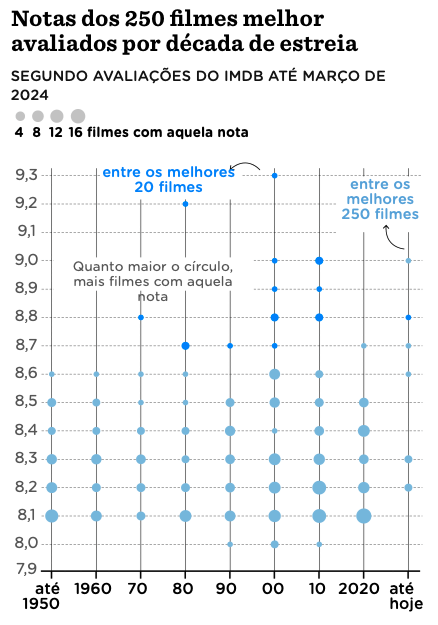

library(ggplot2)
import::from(dplyr, mutate, if_else, case_when)Film ratings over the decades: replicating a Nexo plot
In this tutorial, we delve into the world of cinema ratings over the decades, examining how films from various eras are rated on IMDb. Using ggplot2 in R, this guide will demonstrate how to visualize these ratings to understand trends and highlight significant films.
We’ll replicate a plot originally published in Nexo, a Brazilian media outlet that produces fantastic data visualizations. This replication will serve as a practical application of ggplot2 techniques, making it a valuable exercise for data analysts looking to sharpen their skills or movie enthusiasts curious about film ratings across time.
I replicate plots as a practice and have a compilation of ggplot2 code to replicate visualizations from OurWorldInData, The Financial Times, and The Economist. Nexo is great source for inspiration not only because of the quality of their work, but also because most of their plots are made using ggplot2.

Replicating the plot
Data
To replicate this plot we need the full top 250 IMDB list. There are several ways to acquire this info but I believe the easiest is 250.took.nl. Scrapping this page is straightforward since all the data is neatly arranged as a table element in HTML.
url <- "https://250.took.nl/compare/full"
page <- xml2::read_html(url)
page_tables <- rvest::html_table(page)
tab <- page_tables[[9]]A curious feature of the top 250 IMDB list is that its not ranked by rating. IMDB clarifies this in their FAQ:
- The list is ranked by a formula which includes the number of ratings each movie received from users, and value of ratings received from regular users
IMDB, unfortunately, doesn’t disclose how they define “regular users”. As a result,
imdb <- imdb |>
mutate(
decade = floor(year / 10) * 10,
trunc_rating = round(wr, 1),
trunc_decade = case_when(
decade < 1950 ~ 1940,
decade > 2020 ~ 2020,
TRUE ~ decade
),
#trunc_decade = factor(trunc_decade),
#trunc_decade = forcats::fct_reorder(trunc_decade, decade),
is_top20 = factor(if_else(rank <= 20, 1L, 0L))
)Basic plot
The Nexo visualization is a sort of “punchcard” plot, that shows the frequency of a pair of categorical variables. I discussed these kind of plots in another post. In this case, our variables are decades and binned film ratings.
ggplot(imdb, aes(trunc_decade, trunc_rating)) +
geom_count(aes(color = is_top20)) +
geom_hline(yintercept = 7.9)To improve our base plot we’ll:
Format the text on both axis
Add colors to highlight the top 20 films
Adjust the size legend
nexo_labels <- c("até\n1950", "1960", "70", "80", "90", "00", "10", "20", "até\nhoje")
colors <- c("#328bff", "#88bce4")
plot_base <- ggplot(imdb, aes(trunc_decade, trunc_rating)) +
geom_count(aes(color = is_top20)) +
geom_hline(yintercept = 7.9) +
scale_x_continuous(breaks = seq(1940, 2020, 10), labels = nexo_labels) +
scale_y_continuous(
limits = c(7.9, 9.55),
breaks = seq(7.9, 9.3, 0.1),
labels = scales::label_number(decimal.mark = ",", accuracy = 0.1),
expand = c(0, 0)
) +
scale_color_manual(values = rev(colors)) +
scale_size_area(name = "", breaks = c(4, 8, 12, 16)) +
guides(
color = "none",
size = guide_legend(
label.position = "bottom",
override.aes = list(color = "gray80"))
)
plot_baseAdding labels and arrows
Adding annotations and arrows can be very frustrating in ggplot2. If multiple annotations/arrows are needed I’d recommend using another software to complement R. I’ll split this section into smaller parts, first showing how to handle the text labels and then showing how to draw curved arrows.
Text annotations require at minimum three arguments: x, y, and label. Getting the right values for the text position usually requires multiple tests. Additionally, we usually desire to change both the font and its size. In this case, to get a proper replication we should use the Gotham Rounded font used by Nexo.
Arrows function as line segments in ggplot2 and are defined by a starting and end position on each axis: this means we must specify 4 arguments to draw an arrow. This is made using the geom_arrow function. To make curved arrows, such as those in the original plot, however, we use instead the geom_curve function.
Using the Nexo font
To achieve a more accurate plot we need to use the Gotham Rounded font used by Nexo. If you do don’t have access to this font, I recommend using the Montserrat font available at Google Fonts.
The code below defines a simple function called load_fonts_nexo to load the fonts into the R session.
This step is entirely optional but does make a big difference for the end result.
Code
# Verifica a fonte do texto
check_fonts_nexo <- function() {
dbfonts <- sysfonts::font_files()
nexo_fonts <- paste("Gotham Rounded", c("Bold", "Medium", "Light"))
nexo_fonts_path <- paste0(nexo_fonts, ".otf")
cond <- stringr::str_glue(
"({nexo_fonts[1]})|({nexo_fonts[2]})|({nexo_fonts[3]})"
)
check_fonts <- sum(stringr::str_detect(dbfonts$family, cond))
check_fonts <- ifelse(check_fonts == 3, TRUE, FALSE)
if (!check_fonts) {
fonts_found <- dbfonts$family[stringr::str_detect(dbfonts$family, cond)]
message(glue::glue(
"Missing fonts. Only found: {paste(fonts_found, collapse = ', ')}"
))
}
return(check_fonts)
}
load_fonts_nexo <- function(dpi = 96, ...) {
check_fonts <- check_fonts_nexo()
if (check_fonts) {
# Adiciona as fonts Gotham Rounded Bold e Light
sysfonts::font_add("Gotham Rounded Bold", "Gotham Rounded Bold.otf")
sysfonts::font_add("Gotham Rounded Medium", "Gotham Rounded Medium.otf")
sysfonts::font_add("Gotham Rounded Light", "Gotham Rounded Light.otf")
} else {
# Adiciona Montserrat caso as fontes Gotham nao estejam disponiveis
sysfonts::font_add_google("Montserrat", "Montserrat")
}
sysfonts::font_add_google("Crimson Pro", "Crimson Text")
if (dpi > 0) {
showtext::showtext_opts(dpi = dpi, ...)
}
showtext::showtext_auto()
if (check_fonts) {
message("Gotham Rounded fonts successfully loaded.")
} else {
message("Gotham Rounded font not found. Montserrat was loaded instead.")
}
}
load_fonts_nexo()
font <- ifelse(check_fonts_nexo(), "Gotham Rounded Bold", "Montserrat")
font_axis <- ifelse(check_fonts_nexo(), "Gotham Rounded Light", "Montserrat")
font_title <- "Crimson Text"Adding the annotations
Text annotations require a position and a text label. Additionally, we insert a font and other customizations.
Note that I insert some blank lines in the subtitle. This extra space will later be needed to make room for the color legend.
plot_annotations <- plot_base +
labs(
title = "Notas dos 250 filmes melhor\navaliados por década de estreia",
subtitle = "SEGUNDO AVALIAÇÕES DO IMDB ATÉ DEZ. DE 2024\n\n\n\n",
x = NULL,
y = NULL
) +
annotate(
"label",
x = 1970,
y = 9.31,
label = "entre os melhores\n20 filmes",
# Font of the text
family = font,
# Size of the text
size = 3,
# Color of the text
color = colors[1],
# Centralized text
hjust = 0.5,
# Remove borders
label.size = 0
) +
annotate(
"label",
x = 2015,
y = 9.15,
label = "entre os\nmelhores\n250 filmes",
family = font,
size = 3,
color = colors[2],
# Centralized text
hjust = 0.5,
# Remove borders
label.size = 0
)
plot_annotationsAdding the arrows
The code below adds the arrows. Again, getting the right values will usually require multiple attempts.
Storing the arguments inside a data.frame is not necessary but I feel it makes for more organized code.
plot_arrows <- plot_annotations +
geom_curve(
data = data.frame(x = 1990, xend = 1978, y = 9.31, yend = 9.4),
aes(x = x, xend = xend, y = y, yend = yend),
arrow = arrow(length = unit(0.03, "npc"))
) +
geom_curve(
data = data.frame(x = 2020, xend = 2015, y = 8.6, yend = 9),
aes(x = x, xend = xend, y = y, yend = yend),
curvature = -0.45,
arrow = arrow(length = unit(0.03, "npc"))
)
plot_arrowsFinal plot
Like spices in food, thematic elements are what set a plot apart. The final ingredient for a neat replication is modifying the theme elements.
This may seem the hardest step but my personal experience points to the opposite. Thematic elements follow a well defined and consistent structure, making it easy to change them.
plot_full <- plot_arrows +
theme_minimal(base_family = font, base_size = 14) +
theme(
panel.grid.major.y = element_line(linetype = 3, color = "#d9d9d9", linewidth = 0.35),
panel.grid.major.x = element_line(color = "#838484", linewidth = 0.35),
panel.grid.minor = element_blank(),
legend.position = c(0.09, 1.1),
legend.direction = "horizontal",
legend.text = element_text(size = 10),
plot.subtitle = element_text(size = 10),
plot.title = element_text(family = font_title, size = 22, hjust = 0),
axis.title.y = element_text(color = "#767676"),
axis.ticks.x = element_line(color = "#000000")
)
plot_fullConclusion
We’ve reached the end of our exploration into IMDb ratings of the top 250 films by decade. This tutorial provided a step-by-step guide on using ggplot2 in R to visualize data effectively, showing the power of good visualizations in making data easier to understand and insights more apparent. With these techniques, you can now apply similar methods to analyze and present your own data sets. As you continue to work with ggplot2, you’ll find it an invaluable tool for revealing patterns and stories within the data.